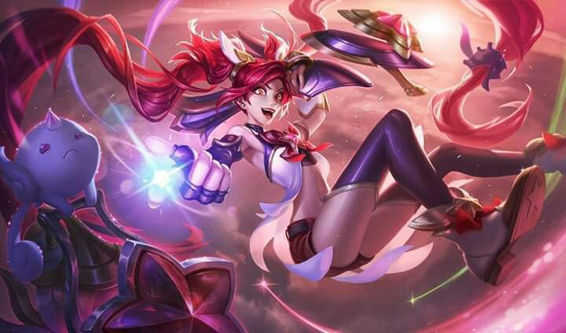

Jinx is one of the best ADC's at the moment, it has a good scalling and it's pretty powerful in early game.
Different Jinx Skins
Explosive jinx

Stellar Guardian
Slayer jinx
Jinx Mafia
Short Story
While most look at Jinx and see only a mad woman wielding an array of dangerous weapons,
a few remember her as a relatively innocent girl from Zaun—a tinkerer with big ideas who never quite fit
in. No one knows for certain what happened to turn that sweet young child into a wildcard, infamous for her wanton acts of destruction.
But once Jinx exploded onto the scene in Piltover, her unique talent for sowing anarchy instantly became the stuff of legend.
Jinx Fans club. Join it!
Sign up to know more about our guides or more information about jinx